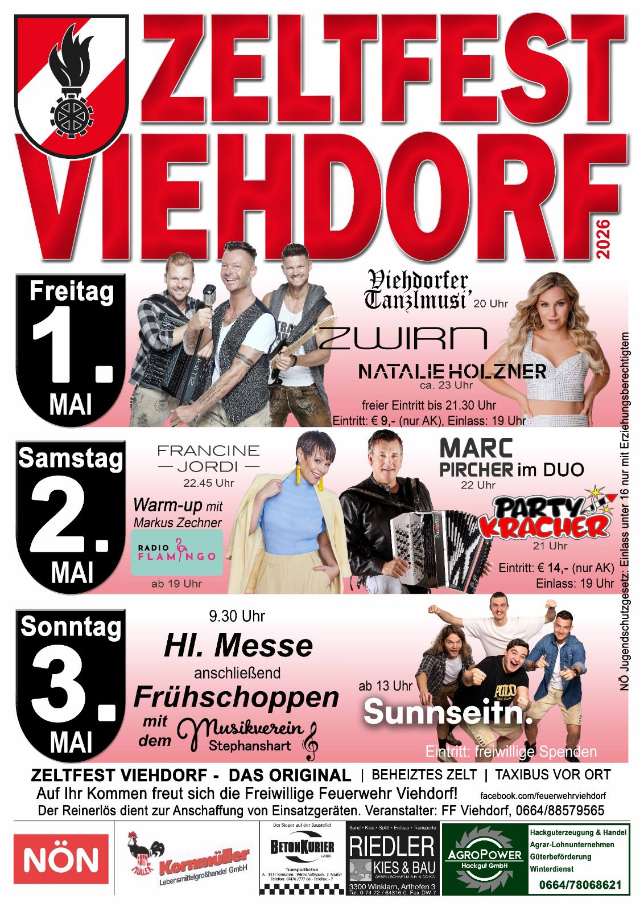

Ein Fest für die ganze Gemeinde
Das Viehdorfer Feuerwehrfest ist ein fixer Bestandteil
des Gemeindelebens – gemütlich, gesellig und offen
für alle Generationen.



Auch 2026 laden wir euch wieder herzlich zu unserem legendären Zeltfest der Freiwilligen Feuerwehr Viehdorf ein. Freut euch auf ein großartiges Wochenende voller Musik, guter Stimmung und gemütlichem Beisammensein im Festzelt!
Die Viehdorfer Tanzlmusi eröffnet den Abend, danach sorgen ZWIRN und Natalie Holzner für beste Stimmung im Festzelt.
Radio Flamingo sorgt für das Warm-up, anschließend übernehmen Die Partykracher und bringen das Zelt richtig in Stimmung. Danach stehen Francine Jordi und Marc Pircher auf der Bühne und sorgen für einen musikalischen Höhepunkt des Abends.
Der Festtag beginnt mit der Feldmesse. Anschließend sorgt der Musikverein Stephanshart für musikalische Unterhaltung, bevor Sunnseitn für Stimmung im Festzelt sorgen.
In den kommenden Tagen und Wochen versorgen wir euch hier mit weiteren Infos rund um das Zeltfest, also bleibt dran! Wir freuen uns auf euren Besuch!
Mit den Nockis durfte das Fest 2024 einen ganz besonderen musikalischen Höhepunkt erleben. Zahlreiche Besucher sorgten für ein volles Festzelt, großartige Stimmung und einen Abend, der vielen noch lange in Erinnerung bleiben wird.
2023 stand ganz im Zeichen ausgelassener Stimmung. Mit den Draufgängern und den Jungen Zillertalern wurde bis spät in die Nacht gefeiert – begleitet von vielen Begegnungen und echtem Festgefühl.

Mit Melissa Naschenweng und den Edlseern bot das Fest 2022 eine gelungene Mischung aus Tradition und moderner Musik. Viele Gäste nutzten das Fest als Treffpunkt für gemeinsames Feiern und gemütliches Beisammensein.
Infos zum nächsten Fest werden rechtzeitig bekannt gegeben.
Kontakt aufnehmen